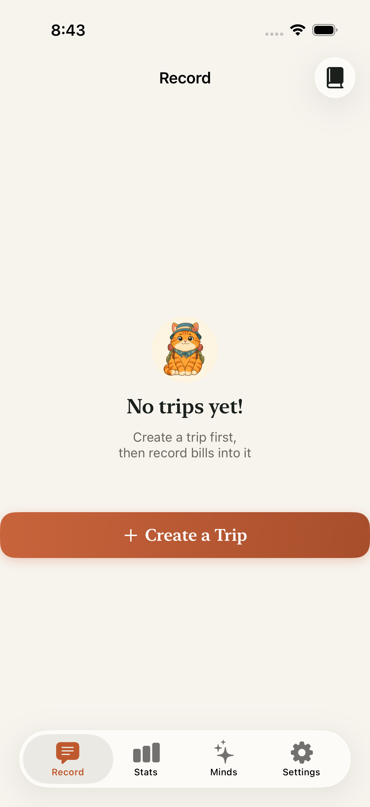
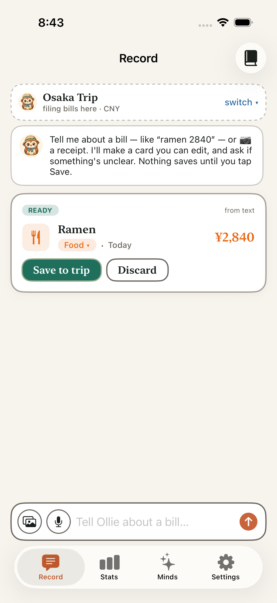
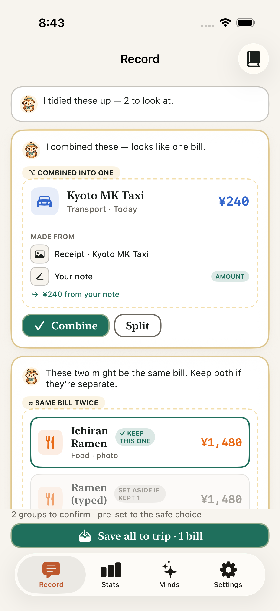
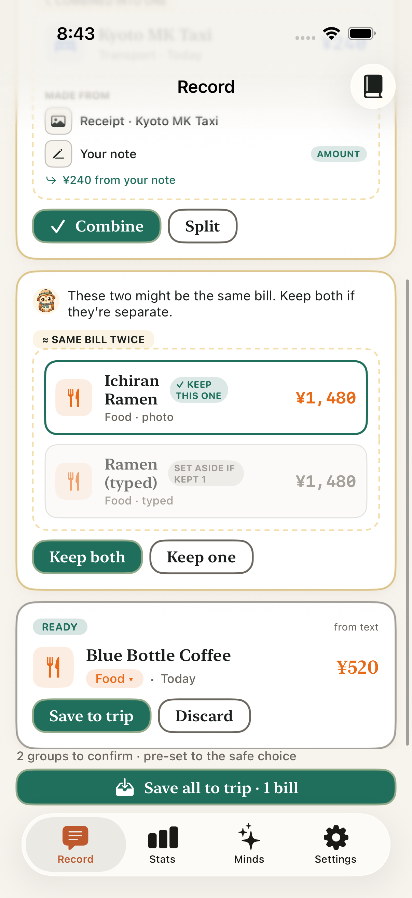
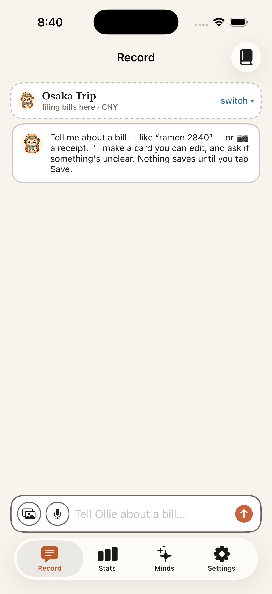

Two independent beta-testers — both ship
Tester A · new-user UX & visual polish
SHIP
"It reads as a real product, not a template." The money-safe untangle reads all match the design in the actual built UI.
Tester B · money-safety & data integrity
SHIP
"No way to mint an amount, no way to double-count, no partition hole." The guard is enforced in pure server code, not just asserted.
1 · What they exercised
Tester A built, installed, and booted the app on the iPhone 17 Pro simulator and walked the Record tab + capture + the review surface, judging first-run feel and polish. Tester B adversarially audited the money-safety invariants in the merged server/client code, ran the server suite, probed Decimal equality semantics, and confirmed the live /v1/untangle endpoint refuses every unauthenticated/malformed request (401) with /healthz 200.
2 · Experience (in their words)
Tester A — UX
The app feels genuinely finished and warm… I typed "ramen 2840" and got a real, legible bill card in a second. The money-safe untangle review is the standout: the fuse proposal shows a sand "COMBINED INTO ONE" bracket (never red), a "MADE FROM" provenance strip, and the trace pill "240 from your note" in green so the number visibly comes from a named input. The duplicate group dims the set-aside member grey (not red) and makes "Keep both" the prominent safe action.
Tester B — integrity
I came at this trying to make BillOwl save the wrong number. The verbatim post-check really does refuse any amount that isn't byte-equal to a member card's amount — I fed it 1000 vs 1000.00 (same money), 1000 vs 1000.001 (rejected), sign/exponent/whitespace forms — it behaves correctly. Conflicting amounts refuse the fuse; an omitted/double-claimed card fails open to clean. Enforced in pure server code I could read and run.
3 · Findings & triage
| Sev | Finding | By | Disposition |
|---|---|---|---|
| medium | Currency-blind fuse guard — €50 and $50 (equal magnitude, different currency) treated as the same amount → could fuse and desync amount↔currency | B | FIXED — PR #11: guard now keys on (magnitude AND currency); cross-currency refuses the fuse; resolved currency tied to the source. + cross-currency tests. |
| medium | Silent degrade — when untangle can't run (unsynced trip / offline), the app silently saved per-card with no explanation | A | FIXED — PR #12: a calm visible note in Ollie's voice ("…kept these as separate bills"); per-card save preserved. |
| low | No cross-currency coverage in the untangle test suite | B | FIXED — covered by the new tests in PR #11. |
| low | Welcome sheet shows a background mascot that reads as a clipped glitch on first run | A | DEFERRED — pre-existing first-launch UI, not F5. Quick polish follow-up. |
| low | Journal chip / intro avatar is a bear-ish animal, muddying the owl (Ollie) identity | A | DEFERRED — pre-existing brand/asset choice, not F5. |
| low | Editing an amount opens an empty 0.00 instead of pre-filling the current value | A | DEFERRED — pre-existing EditDrawer behavior, not F5. |
| low | Duplicate grouping trusts the model's "same bill" with no amount/currency sanity check | B | DEFERRED — not a money-loss hole (members only set aside on an explicit tap); a hardening follow-up. |
Both medium findings were fixed, Codex-reviewed, tested, and merged before this report. The currency fix is verified by exactly the cross-currency tests Tester B asked for. The four low items are pre-existing polish / hardening, deferred as follow-ups — none block the release.
4 · Pipeline screenshots (the running app)






5 · Honest limitation (read before sign-off)
A live signed-in fusion-quality E2E was not possible in this environment. Sign in with Apple/Google can't complete on the simulator, so neither tester held a real auth token — all live network paths (server Gemini recognition, OCR, and a real /v1/untangle round-trip) stop at the 401 boundary. The fuse/duplicate review UI was judged from the app's real built views seeded with representative data, and the fusion logic was verified via the pure server assembler, the 73 passing server tests (incl. the money guard + currency), and the 117 passing client tests — but not a genuine server-produced untangle plan on real photos with a real account.
This is exactly the QA-plan's known gap: real Gemini fusion accuracy on real inputs belongs in TestFlight with a real account, with a labelled true-fuse / false-fuse / true-dup fixture set to track precision/recall. Recommend that be the first thing checked once the app-side build reaches a tester device.
design/dedup/beta/BETA-REPORT.html · Two-beta-tester pass for Smart Multi-Input Capture · both verdicts: SHIP · mediums fixed (PR #11, #12). Screenshots under screens/.